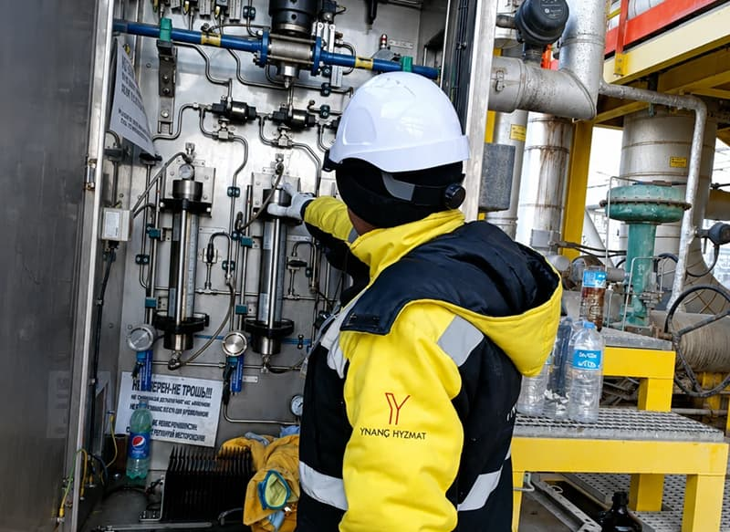

Our Culture
At Ynanch Hyzmat, we believe that the quality of our service is a direct reflection of our internal culture. We operate as a high-performance team where every decision is guided by our commitment to our partners and the highest standards of the oil and gas industry.
- The Principles of Our Decision-Making
-
We don’t just follow processes; we internalize them. Our internal culture is built upon three pillars that ensure our team remains agile and effective:
- Evidence-Based Engineering: We don't rely on guesswork. Every technical recommendation and project pivot is supported by data, manufacturer specifications, and real-world field analysis. We prioritize the facts to ensure your infrastructure remains safe and reliable.
- Decisiveness with Responsibility: Our culture empowers our team to make informed, timely decisions. We understand that in industrial environments, downtime is expensive. Our project leads are trained to analyze risks quickly and execute solutions, provided they meet our strict internal quality and safety protocols.
- The "North Star" Commitment: Every decision, from initial procurement to final onsite commissioning, is filtered through our "North Star"—the long-term success and trust of our partners. If a choice doesn't contribute to the durability of your operations, we revisit the drawing board.
- Fostering a Culture of Excellence
-
We invest in our people because we know that a company is only as good as the expertise and character of its team. Our internal culture encourages:
- Continuous Knowledge Growth: The industrial landscape changes rapidly. We encourage our engineers and staff to constantly pursue professional development, ensuring we remain at the cutting edge of industrial technology.
- Proactive Collaboration: We operate in a flat, highly communicative structure. By encouraging open dialogue between our office-based planners and our field-based technicians, we ensure that the lessons learned on the ground are immediately integrated into our future strategy.
- Unwavering Safety and Compliance: Culture isn't just how we talk; it's how we act. We hold one another accountable for safety compliance and ethical business practices. In every internal meeting, the safety of our team and your facility is the first priority.
